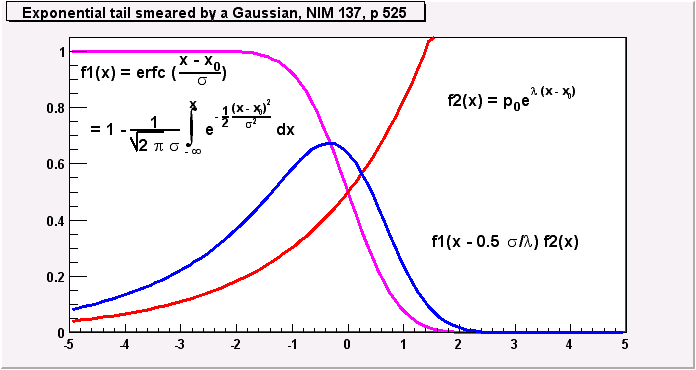

Fitting of functions to 1-dim histograms
From the Fit/Calib/FFT popup menu: Gaussians with tail Exponential function Polynomial User formula Each of the widgets provides an own Help button.Marks are used to provide lower and upper limits of the fitting region. In case of gaussians with more than 1 peak in addition the estimated positions of the peaks must be marked. Marks are set by pressing the middle mouse button.
The program estimates from this the start parameters of the fit which are presented and may be changed. Values may be fixed and bound. When using bounds please be aware of the warnings in the MINUIT manual on this. Fitted parameters may be kept as start for a new fit. As default Minos error analysis is not done but may be switched on.
The quality of the start parameters of a fit determine the speed of convergence. Bad start parameters may lead MINUIT to find an unwanted minimum. Start parameters may be checked by drawing the fit function with these parameters without actually doing a fit.
Fitting of 1-dim functions by a macro
by a user provided macro. A more general way of fitting is to edit a macro where all the functionality provided by the TFormula class may be used. Template macros serving as examples are provided to start with. This macro contains 2 possibilities to provide the fit function: as formula or as normal C++ function.Currently 4 examples are provided: An exponential + a gaussian, 2 gaussians with common mean, a Breit Wigner and 3 Landau functions.
Use the command Edit User Fit Macro to edit the macro. If the macro given by the name exists this is taken otherwise a choice menu with the above 4 examples is presented. Meaningful start values should be given to assure that MINUIT finds the correct minimum.
In this case drawing of components of the fit function must be done in the macro itself.
Tail function
A simplified tail function as described in NIM 137 (1976) p. 525-536 has been implemented. The attached picture illustrates this  ..Option: Visualize fit results
Display fitted curves This option controls which curves are drawn if a function is fitted to a 1_dim histogram. (see Help_on_Fit_1dim_Menu) This function is normally is a sum of several components (Gauss, linear background). As default only the sum of the components are drawn. If this option is active all components are shown allowing a better visual control of the fit. An example is given in the attached picture